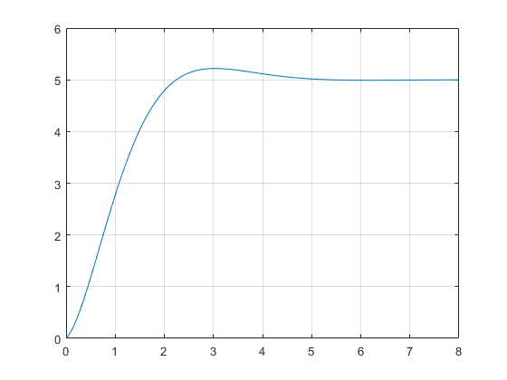
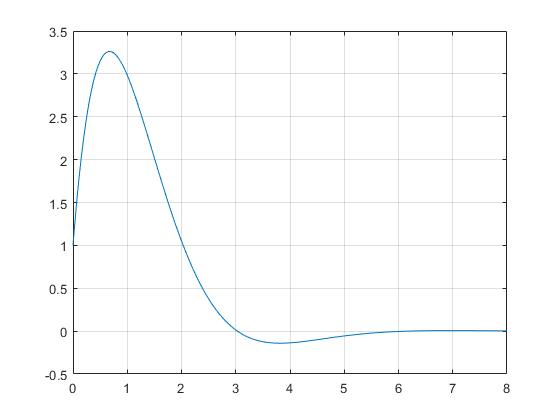
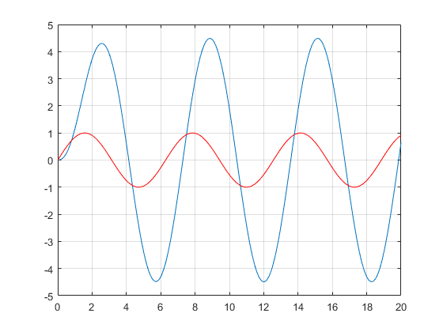
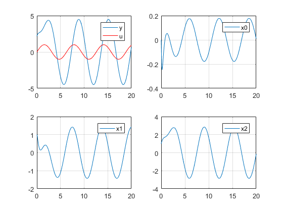

Contents
clear all;clc;close all;
I 多项式
1. 多项式与根
p=[1 3 0 4]; r=roots(p) % 求解p(s)=0的根 p=poly(r) % 根据p(s)=0的根反推多项式
r =
-3.3553 + 0.0000i
0.1777 + 1.0773i
0.1777 - 1.0773i
p =
1.0000 3.0000 -0.0000 4.0000
2. 多项式相乘
p=[3 2 1];q=[1 4]; n=conv(p, q) % 多项式相乘 value = polyval(n,-5) % 多项式在-5时的值
n =
3 14 9 4
value =
-66
II 传递函数
1.创建传递函数
num1=[1 10]; den1=[1 2 1];
sys1=tf(num1, den1) % 创建传递函数
sys1 =
s + 10
-------------
s^2 + 2 s + 1
Continuous-time transfer function.
2.传递函数连接
num2=[1]; den2=[1 10]; sys2=tf(num2, den2); sys_add = sys1 + sys2 % 两个传递函数求和，还有一种表示parallel(sys1, sys2) sys_mul = sys1 * sys2 % 两个传递函数相乘，还有一种表示series(sys1, sys2) sys_fb = feedback(sys1, sys2, -1) % sys2作为负反馈 sys_mul_real = minreal(sys_mul) % 消除公因式
sys_add =
2 s^2 + 22 s + 101
------------------------
s^3 + 12 s^2 + 21 s + 10
Continuous-time transfer function.
sys_mul =
s + 10
------------------------
s^3 + 12 s^2 + 21 s + 10
Continuous-time transfer function.
sys_fb =
s^2 + 20 s + 100
------------------------
s^3 + 12 s^2 + 22 s + 20
Continuous-time transfer function.
sys_mul_real =
1
-------------
s^2 + 2 s + 1
Continuous-time transfer function.
3.零点 & 极点
p = pole(sys1) % 传递函数计算极点 z = zero(sys1) % 传递函数计算零点 % 传递函数同时计算极点和零点[p, z] = pzmap(sys1)
p =
-1
-1
z =
-10
III 响应
1. 阶跃响应
t=[0:0.01:8];
[y,t] = step(sys_fb, t); % 阶跃响应
plot(t,y), grid
 2. 脉冲响应
t=[0:0.01:8];
[y,t] = impulse(sys_fb, t); % 脉冲响应
plot(t,y), grid
 3. 任意输入响应
t=[0:0.1:20]; u=sin(t); [y,T,x]=lsim(sys_fb,u,t,0); % 计算某个输入下的输出 plot(T,y, t,u,'r'), grid;
4. 任意初始值 & 任意输入下的响应
sys_ss=ss(sys_fb); x0=[0 1 1]; % 由于sys_fb是3阶模型，所以x是3*1向量 t=[0:0.1:20]; u=sin(t); % 计算某个初始状态 & 输入下的输出, 由于需要初始状态，所以必须使用状态空间模型，而不能使用传递函数 [y,T,x]=lsim(sys_ss,u,t,x0); subplot(221), plot(T,y, t,u,'r'), legend('y','u'), grid; subplot(222), plot(T,x(:,1)), legend('x0'), grid; subplot(223), plot(T,x(:,2)), legend('x1'), grid; subplot(224), plot(T,x(:,3)), legend('x2'), grid;
IV 状态空间模型
1. 传递函数和状态空间模型相互转换
num = [2 8 6];den = [1 8 16 6];sys_tf=tf(num, den);
sys_ss=ss(sys_tf) % 通过传递函数计算状态空间模型
sys_ss =
A =
x1 x2 x3
x1 -8 -4 -1.5
x2 4 0 0
x3 0 1 0
B =
u1
x1 2
x2 0
x3 0
C =
x1 x2 x3
y1 1 1 0.75
D =
u1
y1 0
Continuous-time state-space model.
2. 状态转移矩阵
A=[0 -2; 1 -3]; dt=0.2;
Phi=expm(A*dt) % 0.2时刻的状态转移矩阵
Phi =
0.9671 -0.2968
0.1484 0.5219